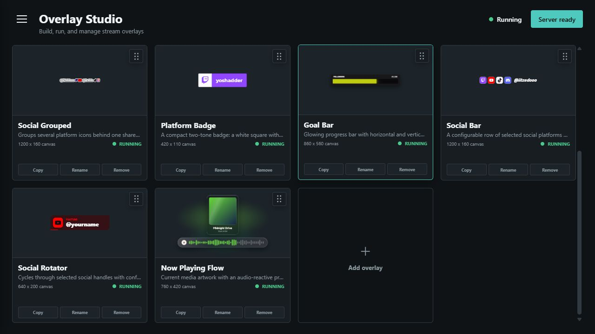
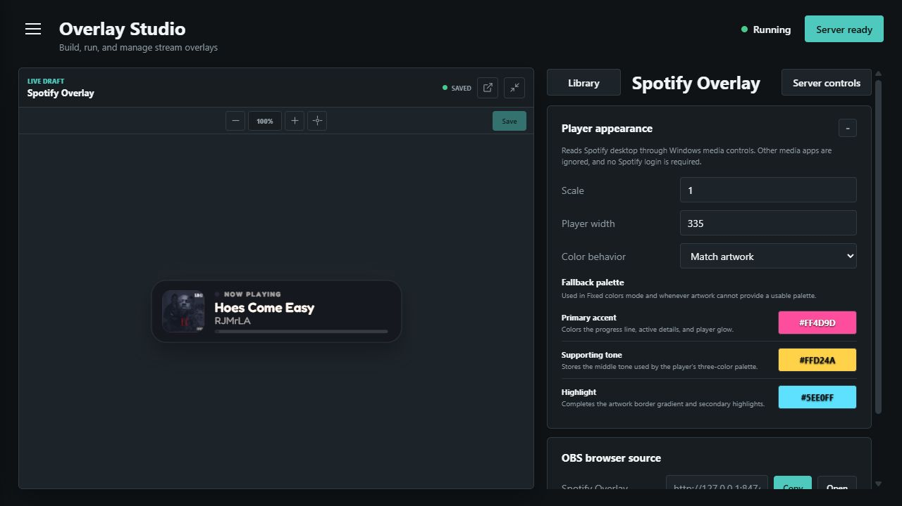
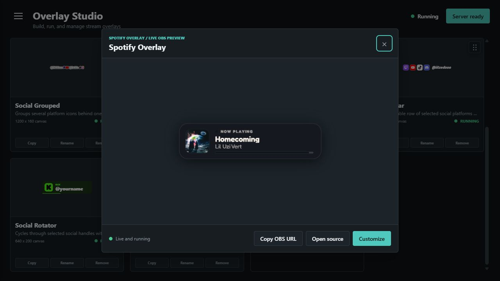
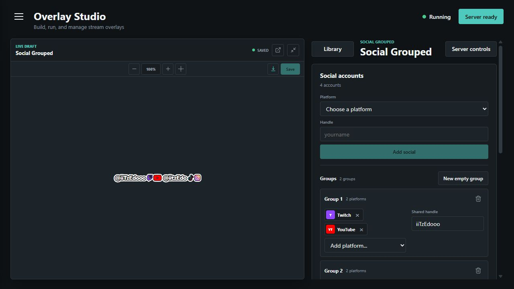
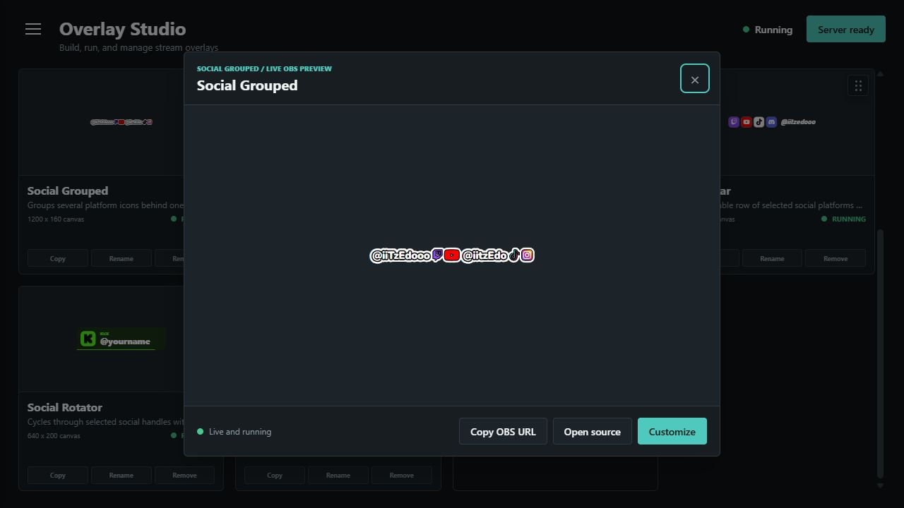

Inside the project · Windows desktop application
Overlay Studio
A production application that gives streamers one place to manage overlay instances, customize their appearance, preview live data, and prepare browser-source URLs for OBS.

01 · Customization
See changes before they reach the stream
Each overlay type has a focused customizer with a live draft. Streamers can adjust content, colors, sizing, and behavior without repeatedly switching between the application and OBS.
Saved settings belong to an overlay instance, allowing several versions of the same overlay type to coexist with different identities or visual treatments.

02 · Library
Manage overlays as reusable instances
The library turns a collection of separate browser sources into a manageable desktop product. A user can create an instance, return to its settings, preview it, and copy the correct URL for OBS.
This model also provides a consistent foundation for adding new overlay categories without rebuilding the surrounding workflow.


03 · Windows media
Turn live media data into an OBS overlay
The now-playing experience reads current Windows media information, presents it inside the customizer, and publishes it to a browser source.
Artwork-derived colors and fallback controls keep the overlay useful when source data changes or is incomplete.


04 · Social identity
Group related accounts without editing a scene
The grouped social overlay lets a streamer assemble several platform identities, share handles where appropriate, and control how they appear as one unit.
The same draft-to-preview workflow keeps this more complex content model consistent with simpler overlay types.
05 · Live output
Keep the preview and browser source in sync
WebSockets carry live state from the desktop application to the browser-source view. That keeps changes and external media updates visible without recreating the OBS scene.
The main technical challenge is coordinating desktop integrations, persistent settings, a local web server, and live browser output as one reliable experience.
What this project demonstrates
Overlay Studio shows how I approach a desktop product with several technical boundaries: native Windows data, a local Python service, a WebView interface, persistent configuration, and real-time OBS browser sources.
Continue exploring